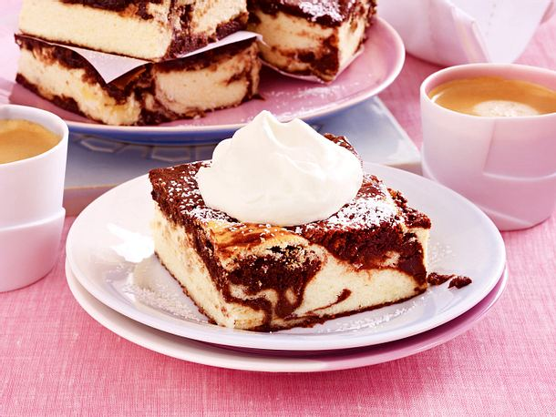

Our quickest and easiest recipe of the mounth
Brownie - Cheesecake

Ingredients
- Grease and flour for the grease pan
- 175 g dark chocolate (70 % cocoa)
- 175 g + 125 g soft butter
- 150 g flour
- 75 g cocoa
- 3 level teaspoon(s) baking powder
- 450 g brown sugar
- 2 p. vanilla sugar salt
- 12 eggs (size M)
- 150 g crème fraîche
- 225 g sugar
- 125 g durum wheat semolina
- 1.5 kg low-fat quark
- Icing sugar for dusting
Preparation
-
Grease the frying pan (approx. 32 x 39 cm; at least 3.5 cm high), dust with flour. Coarsely chop the chocolate. Melt 175 g butter over low heat.
- Mix the flour, cocoa, baking powder, brown sugar, 1 packet vanilla sugar and 1 pinch of salt. Beat the 5 eggs with the whisks of a hand mixer for about 7 minutes until foamy. Pour in the melted butter and stir in.
- .
Add the flour-sugar mixture in 2 portions and stir in briefly. Briefly stir in the crème fraîche. Fold in the chocolate. Spread on the frying pan.
- Cream 125 g butter, sugar, 1 packet vanilla sugar and 1 pinch of salt. Stir in 7 eggs, one at a time. Stir in the semolina. Stir in the quark in portions. Spread evenly over the brownie batter with a tablespoon.
- Using a fork, spiral through the cheese mixture and brownie batter to create a marble pattern. Bake in a preheated oven (electric oven: 175 °C/fan: 150 °C/gas: level 2) for approx. 1 hour.
- Leave to cool and dust with icing sugar.